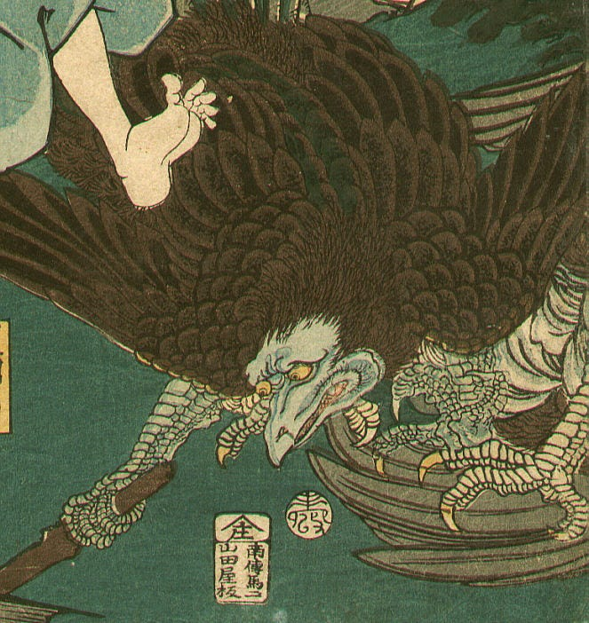
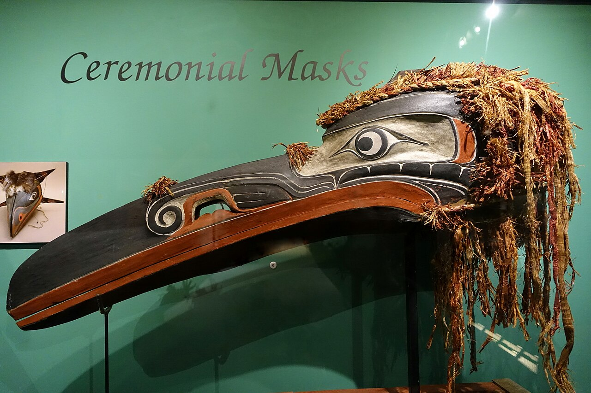
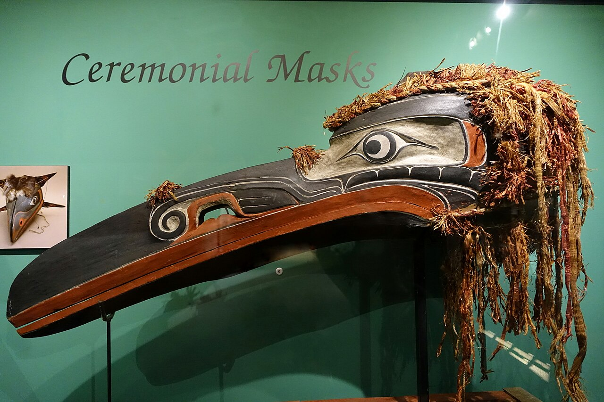
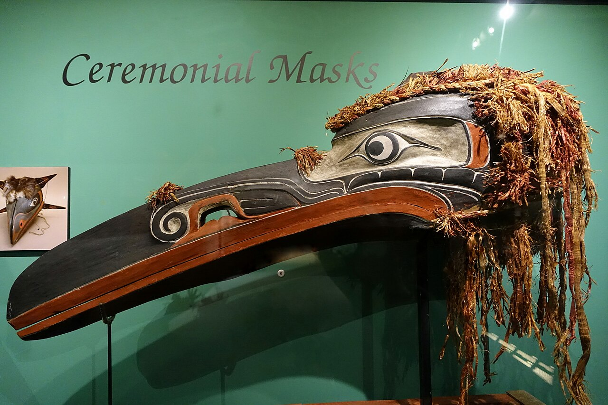

Cultural Depictions of Ravens
Ravens in Memory, Myth and Meaning
Across centuries and continents, raven have carried stories of wisdom, memory, and transformation. Explore their presence in art, ritual, and the natural world.
Cross Culture Portrait
Ravens appear as messengers, guardians, and tricksters across civilizations. This microsite offers an editorial journey through their cultural depictions, paired with concise natural history for context.
Natural History & Intelligence
Members of the corvid family are renowned for tool‑use, mimicry, and cooperative problem‑solving. This section gives quick biological context for the cultural readings.
Raven Facts
| LIFESPAN | 10-15 years |
| FAMILY | Corvidae |
| RENOWNED FOR | Tool use & memory |
Galleries

 

